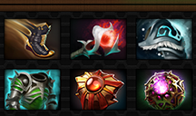
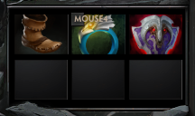
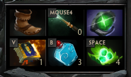
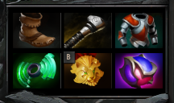
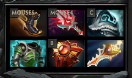

Goal :
Having the 6 items generated by the website, or win the game before. Any failure to comply with the rules below cancels the challenge.
Rule 1 :
Only the parts used in the items of the generated build can be purchased; rule 2 and 4 being the only exceptions.



Rule 2 :
Any item labeled as "Consumable" in the shop, the magic stick and its upgrade, and the gem, may be purchased without restriction.

Rule 3 :
An item needn't be finished before starting another one, as long as the final inventory matches the generated build.

Rule 4 :
Any item of the generated build can be replaced by its upgrade, or by the Divine Rapier; reaching this build completes the challenge.
